My 10 Favorite Movies
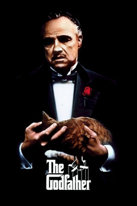
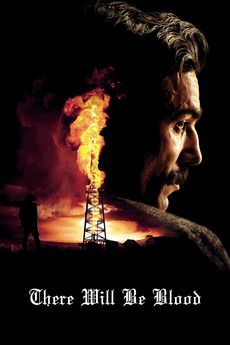

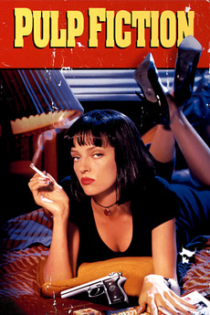

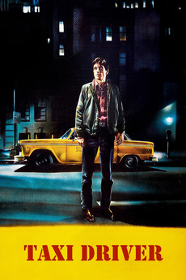
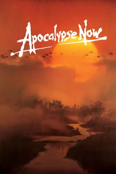
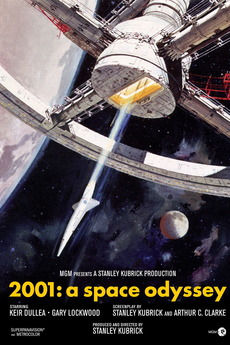
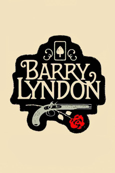
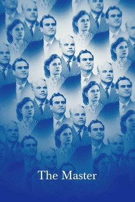
| Rank | Name | Description | Year | Director | Starring |
|---|---|---|---|---|---|
| 1 | The Godfather 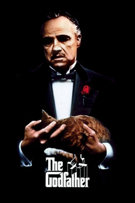 |
Spanning the years 1945 to 1955, a chronicle of the fictional Italian-American Corleone crime family. | 1972 | Francis Ford Coppola | Marlon Brando, Al Pacino, James Cann, Robert Duvall |
| 2 | There Will Be Blood 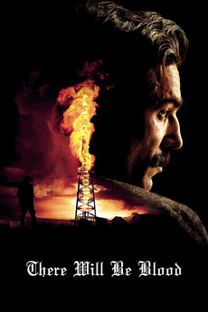 |
Ruthless silver miner, turned oil prospector, Daniel Plainview moves to oil-rich California. Using his adopted son to project a trustworthy, family-man image, Plainview cons local landowners into selling him their valuable properties for a pittance. | 2007 | Paul Thomas Anderson | Daniel Day Lewis, Paul Dano, Kevin J. O'Connor |
| 3 | Goodfellas |
The true story of Henry Hill, a half-Irish, half-Sicilian Brooklyn kid who is adopted by neighbourhood gangsters at an early age and climbs the ranks of a Mafia family | 1990 | Martin Scorsese | Robert De Niro, Joe Pesci, Ray Liotta |
| 4 | Pulp Fiction 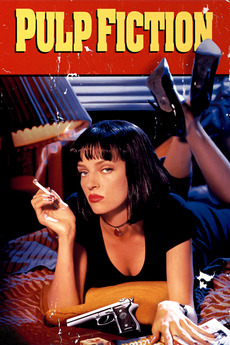 |
A burger-loving hit man, his philosophical partner, a drug-addled gangster’s moll and a washed-up boxer converge in this sprawling, comedic crime caper. Their adventures unfurl in three stories that ingeniously trip back and forth in time. | 1994 | Quentin Tarantino | Samuel L. Jackson, John Travolta, Bruce Willis, Uma Therman, Ving Rhames, Harvey Kietel |
| 5 | The Shining |
Jack Torrance accepts a caretaker job at the Overlook Hotel, where he, along with his wife Wendy and their son Danny, must live isolated from the rest of the world for the winter. But they aren’t prepared for the madness that lurks within. | 1980 | Stanley Kubrick | Jack Nicholson and Shelly Duvall |
| 6 | Taxi Driver 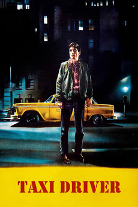 |
A mentally unstable Vietnam War veteran works as a night-time taxi driver in New York City where the perceived decadence and sleaze feed his urge for violent action, attempting to save a preadolescent prostitute in the process. | 1976 | Martin Scorsese | Robert De Niro, Jodi Foster, Harvey Kietel, Cybill Shepard |
| 7 | Apocalypse Now 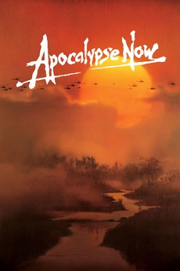 |
At the height of the Vietnam war, Captain Benjamin Willard is sent on a dangerous mission that, officially, “does not exist, nor will it ever exist.” His goal is to locate – and eliminate – a mysterious Green Beret Colonel named Walter Kurtz, who has been leading his personal army on illegal guerrilla missions into enemy territory. | 1979 | Francis Ford Coppola | Martin Sheen, Marlin Brando, Robert Duvall, Denis Hopper |
| 8 | 2001: A Space Odyssey 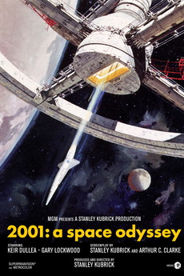 |
Humanity finds a mysterious object buried beneath the lunar surface and sets off to find its origins with the help of HAL 9000, the world’s most advanced super computer. | 1968 | Stanley Kubrick | Keir Dullea, Gary Lockwood, Douglas Rain |
| 9 | Barry Lyndon 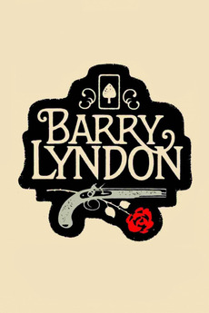 |
1975 | Stanley Kubrick | An Irish rogue uses his cunning and wit to work his way up the social classes of 18th century England, transforming himself from the humble Redmond Barry into the noble Barry Lyndon. | Ryan O'Neal, Marisa Berenson,Patrick Magee |
| 10 | The Master 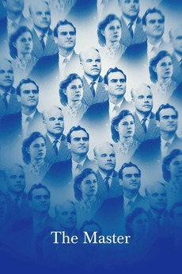 |
2012 | Paul Thomas Anderson | Freddie, a volatile, heavy-drinking veteran who suffers from post-traumatic stress disorder, finds some semblance of a family when he stumbles onto the ship of Lancaster Dodd, the charismatic leader of a new “religion”. | Joaquin Phoenix, Philip Seymour Hoffman, Amy Adams, Laura Dern, Jesse Plemons, Rami Malek |